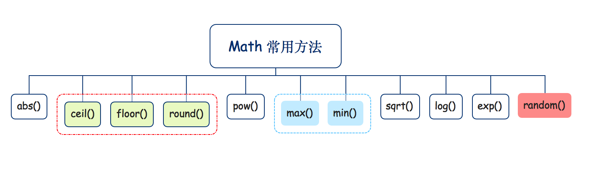

本文介绍JavaScript中的内置对象Math，以及Math的常用方法。
**Math简单介绍**
ECMAScript为我们提供了一个专门处理数学计算的内置对象——Math对象。Math对象提供了很多数学专业计算中可能会用到的特殊值(譬如 π )常量，以及封装好的工具函数(譬如 求N个数最大值、最小值、随机数、绝对值、平方根以及正玄和反余值等)。
这里先通过console.dir()方法打印Math对象的所有成员，我们可以通过下面列出的打印信息对Math对象有一个简单的了解。
1
2
3
4
5
6
7
8
9
10
11
12
13
14
15
16
17
18
19
20
21
22
23
24
25
26
27
28
29
30
31
32
33
34
35
36
37
38
39
40
41
42
43
44
45
46
47
| console.dir(Math);
Math
E: 2.718281828459045
LN2: 0.6931471805599453
LN10: 2.302585092994046
LOG2E: 1.4426950408889634
LOG10E: 0.4342944819032518
PI: 3.141592653589793
SQRT1_2: 0.7071067811865476
SQRT2: 1.4142135623730951
abs: ƒ abs()
acos: ƒ acos()
acosh: ƒ acosh()
asin: ƒ asin()
asinh: ƒ asinh()
atan: ƒ atan()
atan2: ƒ atan2()
atanh: ƒ atanh()
cbrt: ƒ cbrt()
ceil: ƒ ceil()
clz32: ƒ clz32()
cos: ƒ cos()
cosh: ƒ cosh()
exp: ƒ exp()
expm1: ƒ expm1()
floor: ƒ floor()
fround: ƒ fround()
hypot: ƒ hypot()
imul: ƒ imul()
log: ƒ log()
log1p: ƒ log1p()
log2: ƒ log2()
log10: ƒ log10()
max: ƒ max()
min: ƒ min()
pow: ƒ pow()
random: ƒ random()
round: ƒ round()
sign: ƒ sign()
sin: ƒ sin()
sinh: ƒ sinh()
sqrt: ƒ sqrt()
tan: ƒ tan()
tanh: ƒ tanh()
trunc: ƒ trunc()
Symbol(Symbol.toStringTag): "Math"
__proto__: Object
|
**Math常用方法**

Math.abs()方法返回参数值的绝对值。
1
2
| console.log(Math.abs(16));
console.log(Math.abs(-6));
|
Math.max()方法返回参数之中最大的那个值，Math.min()返回参数列表中最小的那个值。如果参数为空, Math.min返回Infinity, Math.max返回-Infinity。
1
2
3
4
5
6
7
|
console.log(Math.max(2, -1, 5, 18));
console.log(Math.min(2, -1, 5, 21));
console.log(Math.min());
console.log(Math.max());
|
Math.pow(x,y)方法返回以第一个参数为底数、第二个参数为幂的指数值，即求x的y次幂。
1
2
3
4
5
6
| console.log(Math.pow(2,3));
console.log(Math.pow(2,-1));
var radius = 20;
var area = Math.PI * Math.pow(radius, 2);
|
Math.round方法用于执行四舍五入操作。
Math.ceil()方法用于返回大于参数值的最小整数（天花板值）。
Math.floor()方法用于返回大于参数值的最大整数（地板值）。
1
2
3
4
5
6
7
8
9
10
11
12
13
14
15
16
17
18
19
20
21
22
23
24
|
console.log(Math.round(0.1));
console.log(Math.round(0.5));
console.log(Math.round(0.6));
console.log(Math.round(-1.1));
console.log(Math.round(-1.5));
console.log(Math.round(-1.7));
console.log(Math.ceil(3.1));
console.log(Math.ceil(3.5));
console.log(Math.ceil(3.9));
console.log(Math.ceil(-3.1));
console.log(Math.ceil(-3.5));
console.log(Math.ceil(-3.9));
console.log(Math.floor(3.1));
console.log(Math.floor(3.5));
console.log(Math.floor(3.9));
console.log(Math.floor(-3.1));
console.log(Math.floor(-3.5));
console.log(Math.floor(-3.9));
|
Math.sqrt()方法返回参数值的平方根，如果参数是一个负值，则返回NaN。
1
2
3
| console.log(Math.sqrt(4));
console.log(Math.sqrt(-4));
console.log(Math.sqrt(9));
|
Math.random()方法返回0到1之间的一个伪随机数，取值区间为[ 0 , 1 ) 。
1
2
3
4
5
6
7
8
9
10
11
12
13
14
15
| console.log(Math.random());
console.log(Math.random());
function getRandom(min, max) {
return Math.random() * (max - min) + min;
}
function getRandomInt(min, max) {
return Math.floor(Math.random() * (max - min + 1)) + min;
}
getRandom(1, 8)
getRandomInt(1, 8)
|
Math对象除了上述工具函数外，还提供一系列的三角函数方法。
1
2
3
4
5
6
7
8
9
10
11
12
|
console.log(Math.sin(0));
console.log(Math.cos(0));
console.log(Math.tan(0));
console.log(Math.sin(Math.PI / 2));
|